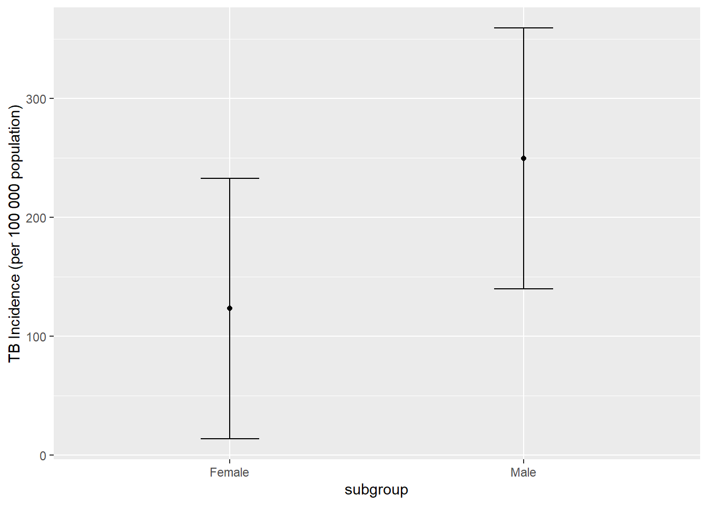

knitr::read_chunk('statistical_analysis.R')Statistical Analysis
Processing script with R script code
This Quarto file runs the statistical analysis code from the statistical_analysis.r script. The processed data is used for model fitting.
To start, the needed packages are loaded, and the processeddata.rda is loaded from the processed_data folder.
Setup
The statistical_analysis.r script needs to be indicated as the file from which to pull code chunks from.
Load packages and data
The packages and data are loaded.
#load needed packages
library(here)
library(tidymodels)
library(tidyverse)
library(ggplot2)#path to data
data_location <- here::here("data","processed_data","processeddata.rda")
#load data.
load(data_location)Model fitting
Now that the data has been explored, I would like to start looking at models for the main outcomes and predictors of the data set. First, we will focus on linear models of the outcomes TB incidence, TB mortality, and TB prevalence. I will be fitting two models using the full data set and only the high burden countries.
Linear model fitting for TB Incidence
######################################
#Data fitting/statistical analysis
######################################
# fit linear model using TB incidence as outcome, subgroup as predictor
lm_mod <- linear_reg() #set linear regression
#fit model with high burden countries
inclm_fit <- lm_mod %>%
fit(`TB incidence (new infections per 100 000 population)` ~ subgroup,
data = highburden) #fit linear model
incfittable <- tidy(inclm_fit)
print(incfittable) #produce tidy table of fitted model# A tibble: 2 × 5
term estimate std.error statistic p.value
<chr> <dbl> <dbl> <dbl> <dbl>
1 (Intercept) 194. 24.2 8.03 2.49e-12
2 subgroupMale 126. 34.2 3.69 3.70e- 4table_file1 = here("results", "model fit tables", "incfittable1.rds")
saveRDS(incfittable, file = table_file1) #save summary table
#fit model with full data
inclm_fitFD <- lm_mod %>%
fit(`TB incidence (new infections per 100 000 population)` ~ subgroup,
data = wide_data) #fit linear model
incfittable2 <- tidy(inclm_fitFD)
print(incfittable2) #produce tidy table of fitted model# A tibble: 2 × 5
term estimate std.error statistic p.value
<chr> <dbl> <dbl> <dbl> <dbl>
1 (Intercept) 82.6 10.4 7.91 2.78e-14
2 subgroupMale 48.0 14.8 3.25 1.25e- 3table_file2 = here("results", "model fit tables","incfittable2.rds")
saveRDS(incfittable2, file = table_file2) #save summary tableThe high burden model has the linear equation of TB incidence = 194 + 126(Male) where male would equal 1. The full data model has the linear equation of TB incidence = 82.6 + 48(Male). Since many of the countries in the full data set have very low incidence, the coefficients for the intercept and subgroup variable are much lower. The model has more data points with low values.
Prediction model for TB Incidence
We can also try to predict the approximate TB incidence for a group. For this example, we will include subgroup and setting as predictors.
#prediction model using subgroup and setting
predinclm_fit <- lm_mod %>%
fit(`TB incidence (new infections per 100 000 population)` ~ subgroup + setting,
data = highburden) #fit linear model
predincfittable <- tidy(predinclm_fit)
print(predincfittable)# A tibble: 50 × 5
term estimate std.error statistic p.value
<chr> <dbl> <dbl> <dbl> <dbl>
1 (Intercept) 287. 54.6 5.27 3.20e- 6
2 subgroupMale 126. 15.4 8.18 1.17e-10
3 settingAzerbaijan -292. 76.4 -3.83 3.73e- 4
4 settingBangladesh -132. 76.4 -1.73 8.97e- 2
5 settingBelarus -324. 76.4 -4.24 1.01e- 4
6 settingBotswana -111. 76.4 -1.45 1.54e- 1
7 settingBrazil -305. 76.4 -4.00 2.21e- 4
8 settingCameroon -177. 76.4 -2.32 2.45e- 2
9 settingCentral African Republic 189. 76.4 2.47 1.70e- 2
10 settingChina -293. 76.4 -3.83 3.71e- 4
# … with 40 more rowsnew_points <- expand.grid(subgroup = c("Female", "Male"),
setting = "India") #predicting Indian incidence based on sex
incpred <- predict(predinclm_fit,
new_data = new_points) #predictions
CIincpred <- predict(predinclm_fit,
new_data = new_points,
type = "conf_int") #confidence intervals for predictions
preddata <- new_points %>% #create plot data
bind_cols(incpred) %>%
bind_cols(CIincpred)
predplot <- ggplot(preddata, aes(subgroup))+
geom_point(aes(y = .pred))+ #plot predictions with confidence intervals
geom_errorbar(aes(ymin = .pred_lower,
ymax = .pred_upper),
width = .2) +
labs(y = "TB Incidence (per 100 000 population)")
predplot
saveRDS(predplot, file = here("results", "model fit tables", "prediction1.rds"))With the prediction model including setting, there are a lot of variables in the model. The prediction would have a 1 for the country of interest and 0 for all other setting variables. For example, the prediction for a male in Central African Republic would appear as TB incidence = 126(1)+189(1).
As an example, I will predict the incidence rate for males and females in India. The code for prediction modeling is based off of the tidymodels guidance. The plot shows the incidence rate and confidence intervals for males (249.3660; CI = 139.68336, 359.0486) and females (123.1038; CI = 13.42112, 232.7864) in India. This can be repeated with the high burden countries.
Linear model fitting for TB Mortality
# fit linear model using TB mortality as outcome, subgroup and setting as predictor
#fit model with high burden countries
mortlm_fit <- lm_mod %>%
fit(`TB mortality (deaths per 100 000 population)` ~ subgroup,
data = highburden) #fit linear model
mortfittable <- tidy(mortlm_fit)
print(mortfittable) #produce tidy table of fitted model# A tibble: 2 × 5
term estimate std.error statistic p.value
<chr> <dbl> <dbl> <dbl> <dbl>
1 (Intercept) 23.6 3.55 6.65 0.00000000179
2 subgroupMale 14.9 5.03 2.97 0.00380 table_file3 = here("results", "model fit tables", "mortfittable.rds")
saveRDS(mortfittable, file = table_file3) #save summary table
#fit model with full data
mortlm_fitFD <- lm_mod %>%
fit(`TB mortality (deaths per 100 000 population)` ~ subgroup,
data = wide_data) #fit linear model
mortfittableFD <- tidy(mortlm_fitFD)
print(mortfittableFD) #produce tidy table of fitted model# A tibble: 2 × 5
term estimate std.error statistic p.value
<chr> <dbl> <dbl> <dbl> <dbl>
1 (Intercept) 9.98 1.50 6.64 1.05e-10
2 subgroupMale 6.43 2.12 3.03 2.65e- 3table_file4 = here("results", "model fit tables", "mortfittableFD.rds")
saveRDS(mortfittableFD, file = table_file4)For high burden countries, the linear equation is TB mortality = 23.6 + 14.9(Male); for the full data model, the linear equation is TB mortality = 9.98 + 6.43(Male).
Linear model fitting for TB Prevalence
# fit linear model TB prevalence as outcome, subgroups as predictors
#fit model with high burden countries
prevlm_fit <- lm_mod %>%
fit(`TB prevalence (cases per 100 000 population)` ~ subgroup,
data = highburden) #fit linear model
prevfittable <- tidy(prevlm_fit)
print(prevfittable) #produce tidy table of fitted model# A tibble: 2 × 5
term estimate std.error statistic p.value
<chr> <dbl> <dbl> <dbl> <dbl>
1 (Intercept) 399. 53.2 7.50 0.0000000361
2 subgroupUrban 151. 75.3 2.01 0.0544 table_file5 = here("results", "model fit tables", "prevfittable.rds")
saveRDS(prevfittable, file = table_file5) #save summary table
#fit model with full data
prevlm_fitFD <- lm_mod %>%
fit(`TB prevalence (cases per 100 000 population)` ~ subgroup,
data = wide_data) #fit linear model
prevfittableFD <- tidy(prevlm_fitFD)
print(prevfittableFD) #produce tidy table of fitted model# A tibble: 2 × 5
term estimate std.error statistic p.value
<chr> <dbl> <dbl> <dbl> <dbl>
1 (Intercept) 410. 49.2 8.34 4.15e-10
2 subgroupUrban 95.5 69.6 1.37 1.78e- 1table_file6 = here("results", "model fit tables", "prevfittableFD.rds")
saveRDS(prevfittableFD, file = table_file6)For high burden countries, the linear equation is TB Prevalence = 399 + 151(Urban) with urban residences receiving a 1 and rural residences receiving a 0. The full data model has an equation of TB Prevalence = 410 + 95.5(Urban). The difference between the high burden and full data models is lower than the other outcomes, most likely due to the long duration of TB or less data points available with the full data model.
Linear model fitting for BCG Coverage
Now we can look at some of the other indicators in the data set. I will only be looking at the indicators that had variation between subgroups.
# fit linear model with BCG coverage as outcome, subgroups as predictors
#fit model with high burden countries
BCGlm_fit <- lm_mod %>%
fit(`BCG immunization coverage among one-year-olds (%)` ~ subgroup,
data = highburden) #fit linear model
BCGfittable <- tidy(BCGlm_fit)
print(BCGfittable) #produce tidy table of fitted model# A tibble: 12 × 5
term estimate std.error statistic p.value
<chr> <dbl> <dbl> <dbl> <dbl>
1 (Intercept) 88.4 0.884 100. 0
2 subgroupMale 0.363 1.25 0.291 7.71e- 1
3 subgroupNo education -10.6 1.30 -8.18 4.67e-16
4 subgroupPrimary education 0.169 1.28 0.133 8.95e- 1
5 subgroupQuintile 1 (poorest) -6.46 1.25 -5.15 2.83e- 7
6 subgroupQuintile 2 -1.60 1.25 -1.27 2.03e- 1
7 subgroupQuintile 3 1.06 1.25 0.843 3.99e- 1
8 subgroupQuintile 4 4.50 1.25 3.59 3.40e- 4
9 subgroupQuintile 5 (richest) 7.01 1.25 5.59 2.52e- 8
10 subgroupRural -2.12 1.25 -1.69 9.06e- 2
11 subgroupSecondary or higher education 6.66 1.25 5.32 1.14e- 7
12 subgroupUrban 5.10 1.25 4.08 4.72e- 5table_file7 = here("results", "model fit tables", "BCGfittable.rds")
saveRDS(BCGfittable, file = table_file7) #save summary table
#fit model with full data
BCGlm_fitFD <- lm_mod %>%
fit(`BCG immunization coverage among one-year-olds (%)` ~ subgroup,
data = wide_data) #fit linear model
BCGfittableFD <- tidy(BCGlm_fitFD)
print(BCGfittableFD) #produce tidy table of fitted model# A tibble: 12 × 5
term estimate std.error statistic p.value
<chr> <dbl> <dbl> <dbl> <dbl>
1 (Intercept) 88.3 0.665 133. 0
2 subgroupMale 0.245 0.940 0.261 7.94e- 1
3 subgroupNo education -9.44 0.992 -9.51 3.12e-21
4 subgroupPrimary education 0.958 0.958 1.00 3.17e- 1
5 subgroupQuintile 1 (poorest) -6.40 0.945 -6.77 1.48e-11
6 subgroupQuintile 2 -1.68 0.945 -1.78 7.56e- 2
7 subgroupQuintile 3 0.773 0.945 0.818 4.14e- 1
8 subgroupQuintile 4 3.84 0.945 4.06 5.03e- 5
9 subgroupQuintile 5 (richest) 6.41 0.946 6.78 1.38e-11
10 subgroupRural -2.08 0.940 -2.21 2.73e- 2
11 subgroupSecondary or higher education 6.42 0.941 6.82 1.02e-11
12 subgroupUrban 4.75 0.940 5.05 4.57e- 7table_file8 = here("results", "model fit tables", "BCGfittableFD.rds")
saveRDS(BCGfittableFD, file = table_file8)The BCG coverage has 12 variables that produce a linear equation of BCG coverage % = 88.4 + 0.363(Male) -10.6(no education) + 0.169(primary education) + 6.66(higher education) - 6.46(quintile 1) - 1.6(quintile 2) +1.06(quintile 3) + 4.50(quintile 4) + 7.01(quintile 5) - 2.12(rural) + 5.10(Urban). The full model has an equation of BCG coverage % = 88.3 + 0.245(Male) -9.44(no education) + 0.958(primary education) + 6.42(higher education) - 6.40(quintile 1) - 1.68(quintile 2) + 0.773(quintile 3) + 3.84(quintile 4) + 6.41(quintile 5) - 2.08(rural) + 4.75(Urban). The two models are overall pretty similar and can be used in the same way as the prediction model (entering in 1 or 0 depending on categorization).
Linear model fitting for Catastrophic costs
# fit linear model with catastrophic costs as outcome, subgroups as predictors
#fit model with high burden countries
costlm_fit <- lm_mod %>%
fit(`Families affected by TB facing catastrophic costs due to TB (%)` ~ subgroup,
data = highburden) #fit linear model
costfittable <- tidy(costlm_fit)
print(costfittable) #produce tidy table of fitted model# A tibble: 7 × 5
term estimate std.error statistic p.value
<chr> <dbl> <dbl> <dbl> <dbl>
1 (Intercept) 87.3 4.65 18.8 9.30e-24
2 subgroupDrug-susceptible TB -40.4 6.57 -6.14 1.51e- 7
3 subgroupQuintile 1 (poorest) -18.6 9.30 -2.00 5.12e- 2
4 subgroupQuintile 2 -38.8 9.30 -4.18 1.24e- 4
5 subgroupQuintile 3 -44.6 9.30 -4.80 1.58e- 5
6 subgroupQuintile 4 -47.4 9.30 -5.09 5.86e- 6
7 subgroupQuintile 5 (richest) -58.5 9.30 -6.30 8.83e- 8table_file9 = here("results", "model fit tables", "costfittable.rds")
saveRDS(costfittable, file = table_file9) #save summary table
#fit model with full data
costlm_fitFD <- lm_mod %>%
fit(`Families affected by TB facing catastrophic costs due to TB (%)` ~ subgroup,
data = wide_data) #fit linear model
costfittableFD <- tidy(costlm_fitFD)
print(costfittableFD) #produce tidy table of fitted model# A tibble: 7 × 5
term estimate std.error statistic p.value
<chr> <dbl> <dbl> <dbl> <dbl>
1 (Intercept) 83.5 4.07 20.5 4.37e-29
2 subgroupDrug-susceptible TB -35.1 5.75 -6.11 7.64e- 8
3 subgroupQuintile 1 (poorest) -11.1 8.30 -1.34 1.85e- 1
4 subgroupQuintile 2 -30.9 8.30 -3.73 4.27e- 4
5 subgroupQuintile 3 -38.4 8.30 -4.63 1.95e- 5
6 subgroupQuintile 4 -41.4 8.30 -4.98 5.45e- 6
7 subgroupQuintile 5 (richest) -54.9 8.30 -6.62 1.04e- 8table_file10 = here("results", "model fit tables", "costfittableFD.rds")
saveRDS(costfittableFD, file = table_file10)The high burden model has an equation of % catastrophic costs = 87.3 - 40.4(drug-suseptible TB) - 18.6(quintile 1) - 38.8(quintile 2) - 44.6(quintile 3) - 47.4(quintile 4) - 58.5(quintile 5). The full model data has an equation of % catastrophic costs = 83.5 - 35.1(drug-suseptible TB) - 11.1(quintile 1) - 30.9(quintile 2) - 38.4(quintile 3) - 41.4(quintile 4) - 54.9(quintile 5). ## Linear model fitting for case detection rate
# fit linear model with case detection rate as outcome, subgroups as predictors
#fit model with high burden countries
cdrlm_fit <- lm_mod %>%
fit(`Case detection rate (%)` ~ subgroup,
data = highburden) #fit linear model
cdrfittable <- tidy(cdrlm_fit)
print(cdrfittable) #produce tidy table of fitted model# A tibble: 4 × 5
term estimate std.error statistic p.value
<chr> <dbl> <dbl> <dbl> <dbl>
1 (Intercept) 37.9 2.33 16.3 6.48e-38
2 subgroup15+ years 19.1 3.29 5.81 2.56e- 8
3 subgroupFemale 16.7 3.28 5.11 7.97e- 7
4 subgroupMale 16.4 3.28 5.00 1.30e- 6table_file11 = here("results", "model fit tables", "cdrfittable.rds")
saveRDS(cdrfittable, file = table_file11) #save summary table
#fit model with full data
cdrlm_fitFD <- lm_mod %>%
fit(`Case detection rate (%)` ~ subgroup,
data = wide_data) #fit linear model
cdrfittableFD <- tidy(cdrlm_fitFD)
print(cdrfittableFD) #produce tidy table of fitted model# A tibble: 4 × 5
term estimate std.error statistic p.value
<chr> <dbl> <dbl> <dbl> <dbl>
1 (Intercept) 43.8 1.76 24.9 4.71e-87
2 subgroup15+ years 18.9 2.47 7.68 1.00e-13
3 subgroupFemale 15.3 2.46 6.24 9.98e-10
4 subgroupMale 16.9 2.46 6.90 1.81e-11table_file12 = here("results", "model fit tables", "cdrfittableFD.rds")
saveRDS(cdrfittableFD, file = table_file12)For high burden countries, the equation is case detection rate % = 37.9 + 19.1(15+ or older) + 16.7(female) + 16.4(male). The full data model has an equation of case detection rate % = 43.8 + 18.9(15+ or older) + 15.3(female) + 16.9(male).
Linear model fitting for prevalence to notification ratio
# fit linear model with prevalence to notification ratio as outcome, subgroups as predictors
#fit model with high burden countries
pnrlm_fit <- lm_mod %>%
fit(`Prevalence to notification ratio (years)` ~ subgroup,
data = highburden) #fit linear model
pnrfittable <- tidy(pnrlm_fit)
print(pnrfittable) #produce tidy table of fitted model# A tibble: 2 × 5
term estimate std.error statistic p.value
<chr> <dbl> <dbl> <dbl> <dbl>
1 (Intercept) 1.73 0.171 10.1 1.71e-13
2 subgroupMale 0.664 0.242 2.74 8.55e- 3table_file13 = here("results", "model fit tables", "pnrfittable.rds")
saveRDS(pnrfittable, file = table_file13) #save summary table
#fit model with full data
pnrlm_fitFD <- lm_mod %>%
fit(`Prevalence to notification ratio (years)` ~ subgroup,
data = wide_data) #fit linear model
pnrfittableFD <- tidy(pnrlm_fitFD)
print(pnrfittableFD) #produce tidy table of fitted model# A tibble: 2 × 5
term estimate std.error statistic p.value
<chr> <dbl> <dbl> <dbl> <dbl>
1 (Intercept) 1.73 0.164 10.5 2.98e-15
2 subgroupMale 0.701 0.232 3.02 3.72e- 3table_file14 = here("results", "model fit tables", "pnrfittableFD.rds")
saveRDS(pnrfittableFD, file = table_file14)The high burden model has an equation of prevalence to notification ratio in years = 1.73 + 0.664(male), and the full model has an equation of prevalence to notification ratio in years = 1.73 + 0.701(male).
Linear model fitting for attitudes
# fit linear model with male attitude as outcome, subgroups as predictors
#fit model with high burden countries
attlm_fit <- lm_mod %>%
fit(`People who would want a family member's TB kept secret - Male (%)` ~ subgroup,
data = highburden) #fit linear model
attfittable <- tidy(attlm_fit)
print(attfittable) #produce tidy table of fitted model# A tibble: 13 × 5
term estimate std.error statistic p.value
<chr> <dbl> <dbl> <dbl> <dbl>
1 (Intercept) 27.6 2.37 11.7 2.40e-23
2 subgroup20-34 years -5.27 3.35 -1.58 1.17e- 1
3 subgroup35-49 years -8.21 3.35 -2.45 1.52e- 2
4 subgroupNo education -3.53 3.41 -1.03 3.02e- 1
5 subgroupPrimary education -2.71 3.41 -0.793 4.29e- 1
6 subgroupQuintile 1 (poorest) -5.01 3.35 -1.50 1.37e- 1
7 subgroupQuintile 2 -5.23 3.35 -1.56 1.20e- 1
8 subgroupQuintile 3 -4.97 3.35 -1.49 1.39e- 1
9 subgroupQuintile 4 -4.38 3.35 -1.31 1.93e- 1
10 subgroupQuintile 5 (richest) -5.86 3.35 -1.75 8.18e- 2
11 subgroupRural -4.91 3.35 -1.47 1.44e- 1
12 subgroupSecondary or higher education -7.23 3.35 -2.16 3.22e- 2
13 subgroupUrban -6.27 3.35 -1.87 6.29e- 2table_file15 = here("results", "model fit tables", "attfittable.rds")
saveRDS(attfittable, file = table_file15) #save summary table
#fit model with full data
attlm_fitFD <- lm_mod %>%
fit(`People who would want a family member's TB kept secret - Male (%)` ~ subgroup,
data = wide_data) #fit linear model
attfittableFD <- tidy(attlm_fitFD)
print(attfittableFD) #produce tidy table of fitted model# A tibble: 13 × 5
term estimate std.error statistic p.value
<chr> <dbl> <dbl> <dbl> <dbl>
1 (Intercept) 24.7 1.98 12.5 1.09e-28
2 subgroup20-34 years -4.94 2.81 -1.76 7.94e- 2
3 subgroup35-49 years -8.14 2.81 -2.90 4.02e- 3
4 subgroupNo education -4.32 2.91 -1.49 1.38e- 1
5 subgroupPrimary education -3.08 2.87 -1.07 2.85e- 1
6 subgroupQuintile 1 (poorest) -4.44 2.81 -1.58 1.15e- 1
7 subgroupQuintile 2 -5.24 2.81 -1.87 6.30e- 2
8 subgroupQuintile 3 -5.18 2.81 -1.84 6.61e- 2
9 subgroupQuintile 4 -4.59 2.81 -1.63 1.03e- 1
10 subgroupQuintile 5 (richest) -6.20 2.81 -2.21 2.79e- 2
11 subgroupRural -4.66 2.81 -1.66 9.80e- 2
12 subgroupSecondary or higher education -6.41 2.81 -2.29 2.30e- 2
13 subgroupUrban -5.99 2.81 -2.13 3.38e- 2table_file16 = here("results","model fit tables", "attfittableFD.rds")
saveRDS(attfittableFD, file = table_file16)The attitude question regarding TB was about the desire to keep a diagnosis hidden. Since males are more likely to be diagnosed with TB, I focused on the male attitude and knowledge. For high burden countries, the equation is % wanting to keep TB secret = 27.6 - 5.27(20-34 years) - 8.21(35-49 years) - 3.53(no education) - 2.71(primary education) - 7.23(higher education) - 5.01(quintile 1) - 5.23(quintile 2) - 4.97(quintile 3) - 4.38(quintile 4) - 5.86(quintile 5) - 4.91(rural) - 6.27(urban). For the full model, the equation is % wanting to keep TB secret = 24.7 - 4.94(20-34 years) - 8.14(35-49 years) - 4.32(no education) - 3.08(primary education) - 6.41(higher education) - 4.44(quintile 1) - 5.24(quintile 2) - 5.18(quintile 3) - 4.59(quintile 4) - 6.20(quintile 5) - 4.66(rural) - 5.99(urban).
Linear model fitting for knowledge
# fit linear model with male knowledge as outcome, subgroups as predictors
#fit model with high burden countries
knowlm_fit <- lm_mod %>%
fit(`People who report TB is spread through coughing - Male (%)` ~ subgroup,
data = highburden) #fit linear model
knowfittable <- tidy(knowlm_fit)
print(knowfittable) #produce tidy table of fitted model# A tibble: 13 × 5
term estimate std.error statistic p.value
<chr> <dbl> <dbl> <dbl> <dbl>
1 (Intercept) 65.9 3.58 18.4 3.13e-47
2 subgroup20-34 years 4.83 5.06 0.953 3.41e- 1
3 subgroup35-49 years 6.19 5.06 1.22 2.23e- 1
4 subgroupNo education -9.91 5.13 -1.93 5.47e- 2
5 subgroupPrimary education -2.81 5.13 -0.548 5.84e- 1
6 subgroupQuintile 1 (poorest) -6.01 5.06 -1.19 2.36e- 1
7 subgroupQuintile 2 -0.464 5.06 -0.0918 9.27e- 1
8 subgroupQuintile 3 2.32 5.06 0.458 6.47e- 1
9 subgroupQuintile 4 7.50 5.06 1.48 1.40e- 1
10 subgroupQuintile 5 (richest) 14.6 5.06 2.88 4.31e- 3
11 subgroupRural 0.419 5.06 0.0828 9.34e- 1
12 subgroupSecondary or higher education 12.6 5.06 2.49 1.33e- 2
13 subgroupUrban 11.8 5.06 2.34 2.02e- 2table_file17 = here("results", "model fit tables", "knowfittable.rds")
saveRDS(knowfittable, file = table_file17) #save summary table
#fit model with full data
knowlm_fitFD <- lm_mod %>%
fit(`People who report TB is spread through coughing - Male (%)` ~ subgroup,
data = wide_data) #fit linear model
knowfittableFD <- tidy(knowlm_fitFD)
print(knowfittableFD) #produce tidy table of fitted model# A tibble: 13 × 5
term estimate std.error statistic p.value
<chr> <dbl> <dbl> <dbl> <dbl>
1 (Intercept) 64.6 2.77 23.3 6.18e-73
2 subgroup20-34 years 6.17 3.92 1.58 1.16e- 1
3 subgroup35-49 years 7.29 3.92 1.86 6.36e- 2
4 subgroupNo education -8.55 4.03 -2.12 3.47e- 2
5 subgroupPrimary education -1.66 3.99 -0.415 6.78e- 1
6 subgroupQuintile 1 (poorest) -3.88 3.92 -0.991 3.22e- 1
7 subgroupQuintile 2 0.0280 3.92 0.00716 9.94e- 1
8 subgroupQuintile 3 3.03 3.92 0.773 4.40e- 1
9 subgroupQuintile 4 8.18 3.92 2.09 3.74e- 2
10 subgroupQuintile 5 (richest) 15.8 3.92 4.04 6.72e- 5
11 subgroupRural 1.28 3.92 0.328 7.43e- 1
12 subgroupSecondary or higher education 12.8 3.92 3.26 1.23e- 3
13 subgroupUrban 12.8 3.92 3.27 1.20e- 3table_file18 = here("results", "model fit tables", "knowfittableFD.rds")
saveRDS(knowfittableFD, file = table_file18)The knowledge question asked about if TB is spread through cough. We will again focus on male knowledge.
The high burden countries had an equation of % responding TB is spread through cough = 65.9 + 4.83(20-34 years) + 6.19(35-49 years) - 9.91(no education) - 2.81(primary education) + 12.6(higher education) - 6.01(quintile 1) - 0.464(quintile 2) + 2.32(quintile 3) + 7.50(quintile 4) + 14.6(quintile 5) + 0.419(rural) + 11.8(urban). The full model had an equation of % responding TB is spread through cough = 64.6 + 6.17(20-34 years) + 7.29(35-49 years) - 8.55(no education) - 1.66(primary education) + 12.8(higher education) - 3.88(quintile 1) + 0.028(quintile 2) + 3.03(quintile 3) + 8.18(quintile 4) + 15.8(quintile 5) + 1.28(rural) + 12.8(urban).
I would like to try and create a dataset using the high burden countries in order to predict the main outcomes of TB incidence and mortality from the indicators (BCG Coverage, knowledge, attitudes, etc). Right now, the data is not set up to complete this analysis, but I will try to find a way to do this.